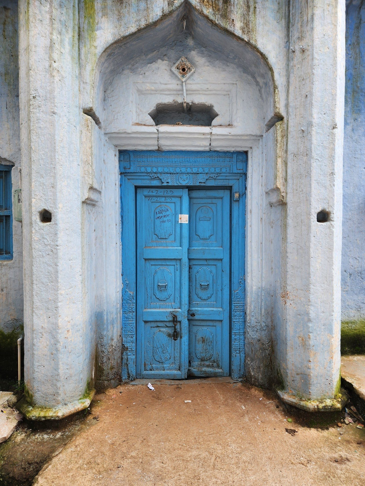
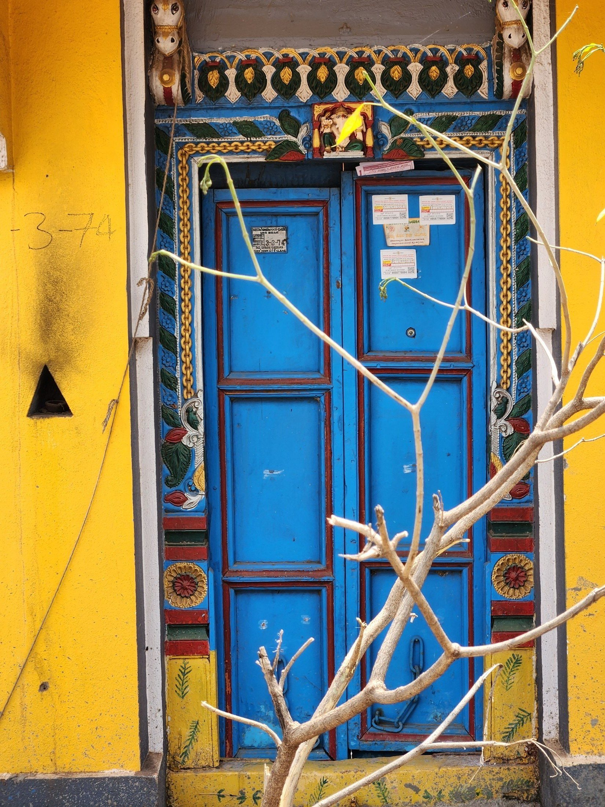
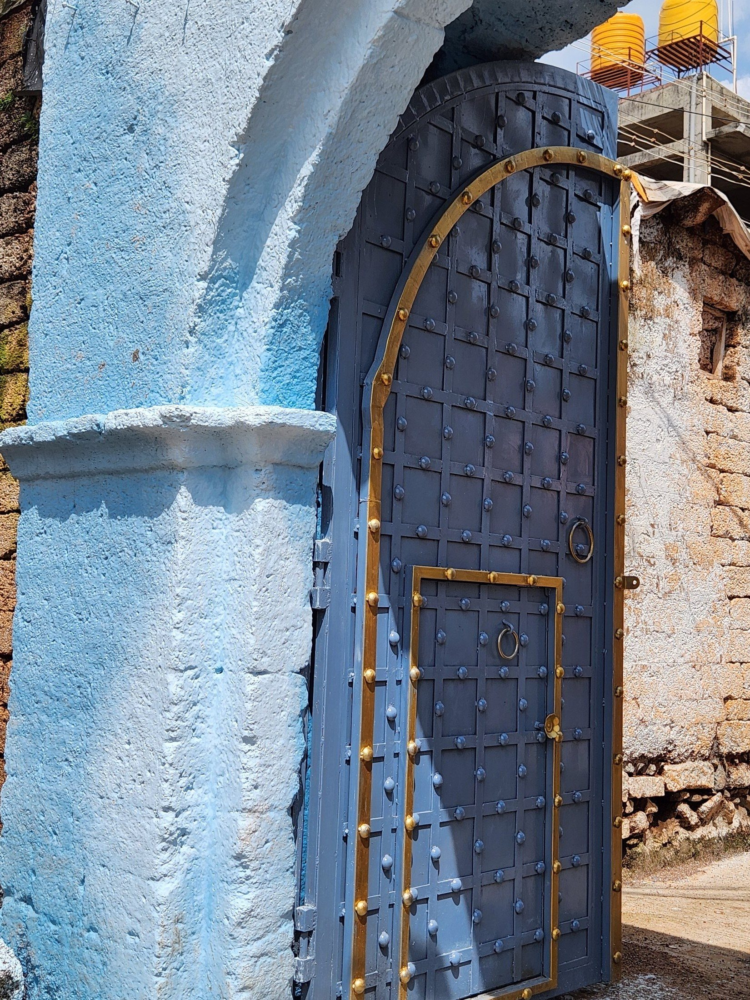
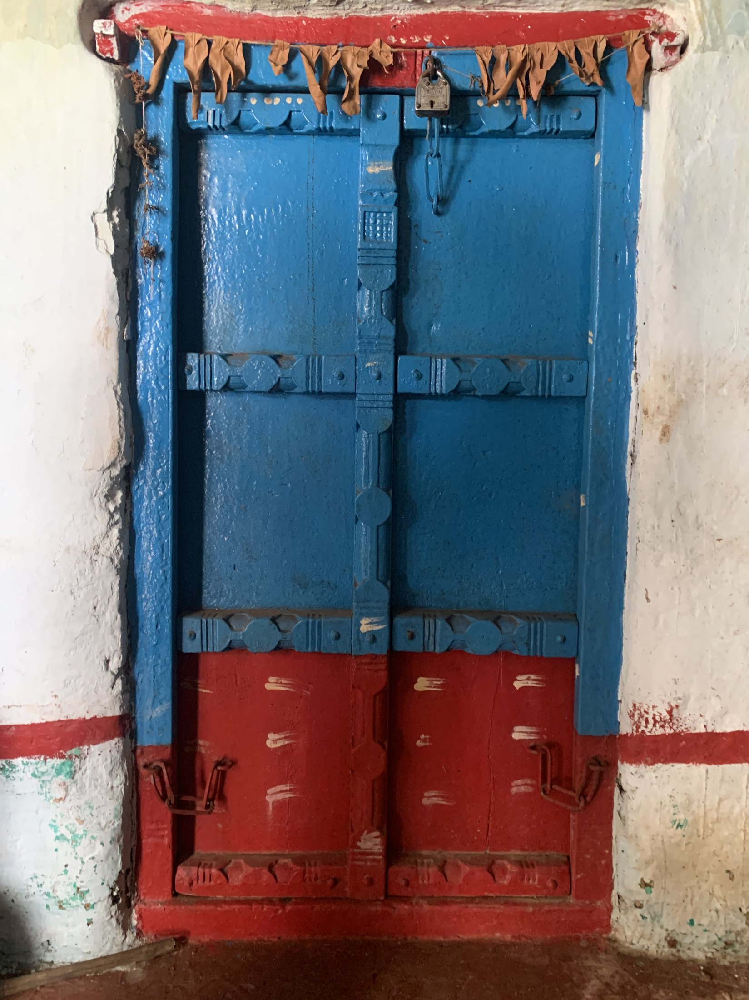

Redefining "Technology" Beyond Silicon
Contemporary design discourse almost exclusively equates "technology" with microchips, software apps, and cloud servers. This myopic view discards millennia of accumulated material intelligence and ecological adaptation perfected by indigenous artisan communities.
During an immersive ethnographic field study in the historic city of Bidar (Karnataka), this investigation engaged directly with Vishwakarma woodcarvers to examine the structural mechanics of traditional residential doors.
"Technology is fundamentally a system of accumulated knowledge, skill, and process used to solve a problem with a specific material and culture. Technology lives in the artisan's hands rather than on hard drives." Core Field Insight
Structural Mechanics: 100-Year Longevity vs. 40-Year Decay
The field study examined a striking physical contrast: a 100-year-old traditional teakwood door stood structurally pristine without a single repair, while an adjacent 40-year-old "modern" door built with metallic nails and synthetic glue had rotted and split at its base.
The Tapered Tongue-and-Hole Interlock
Traditional Vishwakarma carpentry rejects rigid 90° cuts and ferrous nails. Instead, the door frame relies on tapered tongue-and-hole joints locked with hand-carved wooden pegs:
- Gravitational Self-Tightening: The joint is angled so that the downward gravitational pull of the heavy door naturally drives the wooden peg deeper into the socket, tightening the structural lock over decades of continuous swinging.
- Humidity-Adaptive Respiration: In Bidar's monsoon season, wood fibers absorb moisture and expand; during dry summers, they contract. Because the pegs and door frame are carved from the same species of seasoned timber with aligned grain orientation, the joint expands and breathes uniformly without splitting, cracking, or binding.
- Zero-Rust Longevity: By eliminating metallic nails, the door eliminates the galvanic corrosion and internal wood rot that destroy modern factory-assembled doors.
Doorway and Surface Photographs



Takeaways for Sustainable Physical Product Design
The supplied photographs document doorway context and visible surface details, but do not show the internal wooden peg joints closely. A close-up of those joints would make the structural analysis easier to verify visually.
The study concluded with three direct imperatives for contemporary industrial design and physical product strategy:
- Designing for Natural Degradation & Movement: Rather than fighting material changes with brittle chemical adhesives, design assemblies that accommodate thermal expansion and wear.
- Zero-Fastener Disassembly: Traditional interlocking joinery provides an ideal circular design model for modular consumer hardware that can be repaired or recycled without tools.
- Tacit Knowledge as Innovation: True design innovation requires listening to generational craft lineages that have solved sustainability long before modern certifications existed.